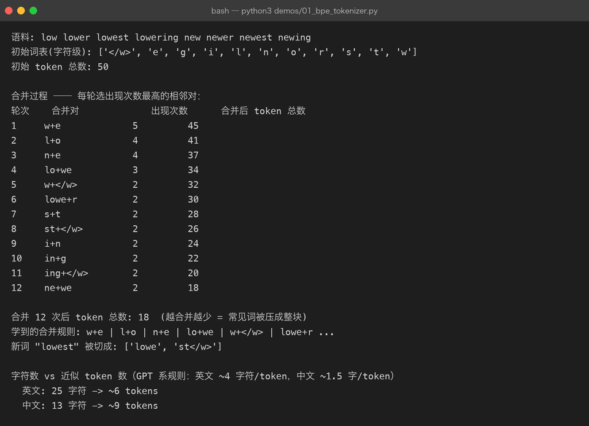
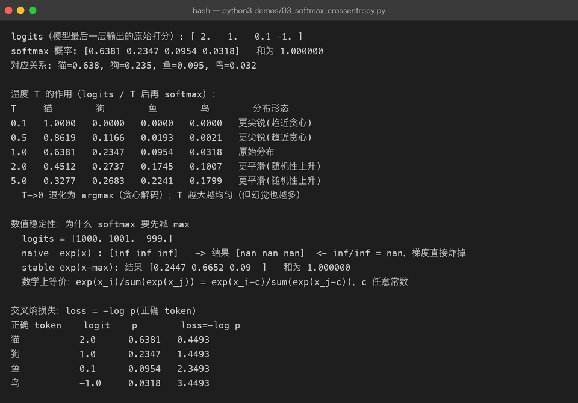
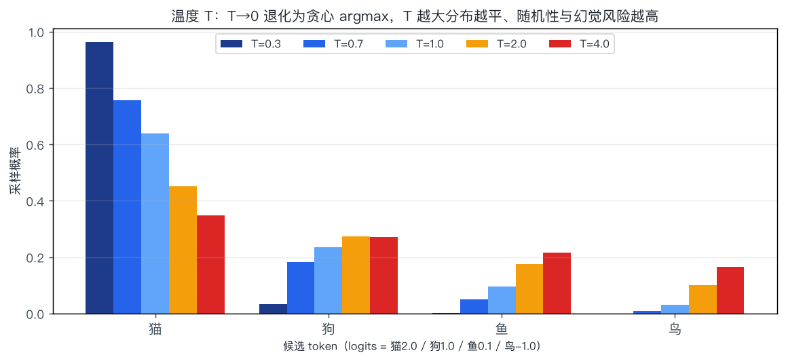

01 · 语言模型基础：一个 token 的一生
一句话结论：大语言模型（LLM）在训练时唯一做的事，就是给定前文，预测下一个 token 的概率分布。 所谓"智能"，是在把这个目标做到极致的过程中涌现出来的副产品。
本章把这条链路走完一遍：文本 → token → 向量 → logits → 概率 → 损失。这一步走通了，后面所有章节都只是在这条链路上加零件。
1.1 从一句话开始：语言模型到底在算什么
给模型半句话：
我 在 北京 吃 烤 ___它输出的是一个概率分布，而不是一个词：
| 候选 | 烤鸭 | 羊肉 | 火锅 | 香蕉 |
|---|---|---|---|---|
| 概率 | 0.62 | 0.15 | 0.11 | 0.0003 |
用数学写出来，语言模型做的是把整个序列的联合概率分解成一串条件概率：
这个分解叫自回归（autoregressive）：每一步只看前面，不看后面。它带来两个直接后果：
| 后果 | 说明 |
|---|---|
| 训练可以高度并行 | 一句话里每个位置的目标都是"下一个词"，一次前向就能算出全部位置的损失（见 1.6） |
| 生成必须串行 | 第 t 个 token 是第 t+1 个的输入，只能一个一个吐（见 第 07 章） |
输入: 我 在 北京 吃 烤
目标: 在 北京 吃 烤 鸭 <- 每个位置都预测"它的下一个"
↑ 这就是"下一 token 预测"，一句话同时提供了 5 个训练样本记住这一句：整个 LLM 产业（预训练 → 微调 → 对齐 → 推理优化）都是围绕"下一 token 预测"这一个目标展开的。
1.2 第一步：文本 → token（分词 / Tokenization）
模型不认识字符，只认识整数。token 是模型处理文本的最小单位，介于"字符"和"词"之间。
1.2.1 为什么不用「按字符」或「按词」
| 粒度 | 词表大小 | 序列长度 | 问题 |
|---|---|---|---|
| 按字符 | 极小（~10⁴） | 太长 | 序列翻好几倍，注意力是 O(n²)，算不起；单字符信息量太低 |
| 按词 | 极大（10⁶⁺） | 短 | 未登录词（OOV）无法处理；中文/德语的复合词爆炸；词表大 → embedding 矩阵和 softmax 都变贵 |
| BPE 子词 | 中（3×10⁴ ~ 2×10⁵） | 适中 | ✅ 常见词整块保留，生僻词拆成片段，兼顾长度与词表 |
1.2.2 BPE：字节对编码的算法思想
BPE（Byte-Pair Encoding）的核心只有两步循环：统计最常相邻的符号对 → 合并它。
流程图（简化）：
S— 初始：拆到字符级 l o w e r </w>M— 合并为一个新符号 w e → weU— 更新词表：加入新 token 'we'F— 得到最终词表 + 合并规则表T— 对新文本：按合并规则 从字符贪心合并
下面是 demos/01_bpe_tokenizer.py 的真实运行结果（语料 8 个词，合并 12 次）——注意"合并后 token 总数"一路下降，说明常见片段被压成了整块：

合并过程中学到的高频组合，正好是英语里最常见的词素：w+e → l+o → n+e → lo+we → w+</w> → lowe+r … 最后新词 lowest 被切成 ['lowe', 'st</w>'] 而不是 6 个字符。这就是子词分词的价值：见过的部分复用，没见过的部分拆开。
1.2.3 真实的分词器长什么样
生产模型用的是字节级 BPE（BBPE）：先按 UTF-8 转成字节，再对字节做 BPE。好处是任何 Unicode 文本都不会 OOV，最坏情况退化为逐字节。
| 模型 | 分词器 | 词表大小 | 特点 |
|---|---|---|---|
| GPT-2 | BPE | 50,257 | 最早的字节级 BPE |
| GPT-4 / o 系列 | cl100k_base / o200k_base | 10 万 / 20 万 | 合并了多空格、对代码友好 |
| LLaMA 3 | TikToken-based BPE | 128,256 | 词表大 → 同样文本 token 更少，推理更快 |
| Qwen / DeepSeek | BPE | 15 万左右 | 中文压缩率高（1 汉字常为 1 token） |
| SentencePiece / Unigram | 语言无关子词 | 32k 左右 | 不依赖空格，适合中日韩 |
1.2.4 中文为什么更"贵"
同样的意思，中文信息密度高、但每个汉字占的字节多（UTF-8 一个汉字 3 字节），早期面向英文训练的分词器会把一个汉字拆成 2–3 个 token：
| 文本 | 字符数 | 大致 token 数 | 说明 |
|---|---|---|---|
The quick brown fox jumps | 25 | ~6 | 英文约 4 字符/token |
那只敏捷的棕色狐狸跳了过去 | 13 | ~9（老分词器） / ~13（中文优化后 1 字 1 token） | 中文早期常 1 字 ≈ 1.5 token |
这件事有真实的钱味：token 数直接决定 API 计费和上下文上限。所以国内模型都专门扩了中文词表。
1.2.5 别忽略特殊 token
| token | 作用 | 典型形式 |
|---|---|---|
| BOS / EOS | 序列开始 / 结束 | <s>、<｜endoftext｜> |
| PAD | 批处理时补齐长度 | <pad>（注意 attention mask 要屏蔽掉，见 第 02 章 2.5） |
| 角色标记 | 对话模板 | <｜im_start｜>user … <｜im_end｜> |
坑：同一个模型权重，用错 chat template（比如漏掉角色标记）会让效果断崖式下跌。这不是"格式洁癖"，因为模型就是在这些 token 的分布上训练出来的。
1.3 第二步：token → 向量（Embedding）
token id 只是索引，没有语义。要参与矩阵运算，必须先变成向量。
V：词表大小（例如 128,256）d_model：隐藏维度（例如 4096）- 所谓"查表"，数学上等价于 one-hot 向量 × E
id = 321 -> one-hot(长度 V) = [0,0,...,1,...,0]
↑ 第 321 位
× E (V × d_model)
↓
x = [0.12, -0.88, ..., 0.31] 长度 d_model| 关键性质 | 含义 |
|---|---|
参数量 = V × d_model | LLaMA-7B：128k × 4096 ≈ 5.2 亿参数，占总参数 7.5%，不小 |
| 语义相似 = 向量相近 | "猫"和"狗"的 embedding 余弦相似度明显高于"猫"和"利率" |
| 一个 token 一个向量？ | 不完全是。同一个词在不同上下文中，上下文相关表示在注意力层里被改写（见 第 02 章） |
| 权重共享（weight tying） | 输出投影 d_model × V 直接复用 Eᵀ，省下同样的 5 亿参数（GPT-2 / 多数小模型这么做） |
注意区分两个常被混为一谈的词： - Input embedding：token → 向量（本章） - Sentence embedding / text embedding：整句话 → 一个向量，用于检索。RAG 用的就是这种（由 encoder 或专门的双塔模型产出），跟语言模型内部的 embedding 不是一回事。
1.4 第三步：向量 → 概率（LM Head + Softmax）
经过 N 层 Transformer（第 03 章）后，最后一个位置的隐藏状态 h ∈ R^{d_model} 要变成"下一个词的打分"。
1.4.1 logits 是什么
logits = 未归一化的打分，可以为负、可以很大，还不构成概率分布。只有过完 softmax 才是概率。
工程上必须先减去最大值再取指数——数学上等价，但能避免 exp(1000) 溢出：
下面是 demos/03_softmax_crossentropy.py 的真实输出，用 logits = [1000, 1001, 999] 做了对照实验：

看第 2 段：不减最大值时 exp 全部溢出成 inf，inf/inf 得到 nan，梯度直接炸掉；减掉最大值后得到正常的 [0.2447, 0.6652, 0.0900]。这就是为什么所有框架的 softmax 都是"数值稳定"版本。
1.4.2 温度 T：采样时的"随机性旋钮"
在 softmax 之前把 logits 除以 T：

| T | 效果 | 使用场景 |
|---|---|---|
| → 0 | 退化为 argmax（永远取最高分） | 数学解题、抽取结构化字段 |
| 0.2 – 0.7 | 分布更尖锐，稳定但略死板 | 代码、翻译、RAG 问答 |
| 1.0 | 使用模型原始分布 | 通用对话 |
| > 1.2 | 分布变平，长尾 token 有机会 | 创意写作、头脑风暴（幻觉风险同步上升） |
注意：温度不改变相对排序，只改变分布平坦程度。
argmax在任意 T 下都不变——所以"调温度"解决不了"模型把答案排在了第二位"这类问题。
1.4.3 完整链路速查
| 阶段 | 张量形状 | 含义 | 典型数值 |
|---|---|---|---|
| 输入文本 | (1,) str | "我在北京吃烤" | — |
| token ids | (T,) int | [7892, 221, 1900, ...] | 词表内 |
| embedding | (T, 4096) float | 逐 token 向量 | ~N(0, 1) |
| 隐藏状态（末层） | (T, 4096) float | 上下文相关表示 | — |
| logits | (T, V) float | 每个位置对全词表打分 | −30 ~ +30 |
| 概率 | (T, V) float | 每行和为 1 | 0 ~ 1 |
| 采样结果 | (1,) int | 实际吐出的 token | 词表内 |
1.5 训练目标：交叉熵与困惑度
1.5.1 交叉熵损失
符号含义：
| 符号 | 含义 |
|---|---|
| 序列长度（实际是有效 token 数，PAD 不算） | |
| 第 t 个位置的 logits，维度 V | |
| 正确 token 对应的那一个 logit | |
| 自然对数 |
直觉：只惩罚"正确 token 的概率不够高"。模型给出的正确概率是 0.9 → loss 0.105；只给 0.01 → loss 4.6。
1.5.2 shift-by-one：目标怎么对齐
tokens: [BOS] 我 在 北京 吃 烤 鸭 [EOS]
logits: z0 z1 z2 z3 z4 z5 z6
target: 我 在 北京 吃 烤 鸭 [EOS] <- 就是输入左移一位
loss: CE(z0, 我) + CE(z1, 在) + ... + CE(z6, EOS)一句话：输入和标签是同一串 token，只是错开一格。 这就是"自监督"——不需要任何人工标注。
1.5.3 困惑度（Perplexity）
| 交叉熵 | 困惑度 | 人话解释 |
|---|---|---|
| 0.00 | 1.0 | 完全确定（不可能达到） |
| 0.69 | 2.0 | 每次预测 ≈ 在 2 个候选里犹豫 |
| 2.30 | 10.0 | 每次都像在 10 个候选里挑 |
| 5.00 | 148 | 基本在瞎猜 |
真实参考（不同语料不可直接比）：
| 模型 / 设置 | 交叉熵 | 困惑度 |
|---|---|---|
| 随机猜（词表 5 万） | 10.8 | 5 万 |
| GPT-2 在通用英文 | ~3.0 | ~20 |
| 现代 7B 模型在英文维基 | ~2.2 | ~9 |
| 现代 70B+ 模型 | < 2.0 | < 8 |
困惑度越低 ≠ 越有用。它衡量的是"对语料的拟合"，而用户关心的是"任务做对没有"。这两者常常一起上升，但对齐（第 08 章）后经常出现"困惑度略升、人类评价更高"的情况。
1.5.4 为什么用交叉熵，不用准确率
| 指标 | 可导 | 梯度信息 | 结论 |
|---|---|---|---|
| 准确率（是否 argmax 命中） | ✗ 阶梯函数，几乎处处梯度为 0 | 无 | 无法训练 |
| 交叉熵 | ✓ | 连续反映"差多远" | ✅ 训练目标 |
| 困惑度 | ✓（是 CE 的单调变换） | 与 CE 等价 | 用来汇报 |
1.6 训练 vs 推理：同一个模型的两种姿势
流程图（简化）：
Train— 训练（并行，一次看完整个序列）T1— 输入整句 [T 个 token]T2— 一次前向 → z1..zTT3— 对每个位置算 CE，求和取平均T4— 反向传播 → 更新全部参数Infer— 推理（串行，一次一个 token）I1— 输入 promptI2— 前向 → 只要最后一个位置的概率I3— 采样得到新 tokenI4— 把新 token 拼回输入
| 维度 | 训练 | 推理（生成） |
|---|---|---|
| 并行度 | 全部位置并行 | 严格串行 |
| 输入 | 真实文本（teacher forcing） | 模型自己刚生成的 token |
| 计算特点 | 算力密集（矩阵乘满负荷） | 显存带宽密集（每步只算一点） |
| 关键优化 | 混合精度、并行策略、FlashAttention | KV Cache、连续批处理、量化（第 07 章） |
| 副作用 | — | 曝光偏差（exposure bias）：训练时只看过正确前缀，推理时错一步就可能越走越偏 |
曝光偏差是"训练/推理不一致"的经典后果。缓解手段（如 scheduled sampling）在 LLM 时代不主流，更常用的办法是：对齐阶段教它自我纠错（第 08 章），以及解码阶段加约束（第 07 章）。
1.7 完整地图：三阶段分别改变了什么
流程图（简化）：
R— 原始互联网文本 （几 T ~ 几十 T token）PT— ① 预训练 下一 token 预测BM— Base Model 会续写，不会听话SFT— ② 指令微调 (SFT) 问答/对话数据RM— ③ 对齐 (RLHF/DPO) 人类偏好Chat— Chat Model 会听话，会拒绝
| 阶段 | 数据形态 | 改变了什么 | 详见 |
|---|---|---|---|
| 预训练 | 海量无标注文本 | 学会语言与世界的统计规律 | 第 04 章 |
| 指令微调 | 指令-回答对（万~百万级） | 学会"按指令办事"的形式 | 第 05 章 |
| 对齐 | 人类偏好对比数据 | 学会"什么是好回答" | 第 08 章 |
1.8 常被误解的点
| 误解 | 真相 |
|---|---|
| "模型在数据库里检索答案" | 知识被压缩进参数（分布式存储）。所以会有"记错"和"编造"，这是压缩的固有代价，不是 bug |
| "温度调低就不会胡说" | 低温度让输出更确定，但错误答案同样更确定。事实性要靠 RAG / 工具调用兜底 |
| "困惑度低就是好模型" | 困惑度只看语言拟合，不看指令遵循、事实性、安全性 |
| "token 就是词" | 一个词可能是多个 token，一个 token 也可能是半个词或一堆空格 |
| "logits 就是概率" | logits 未归一化，可为负。softmax 之后才是概率 |
| "训练时模型看见答案才知道怎么答" | 训练时确实喂了真实文本（teacher forcing），但模型内部只能看到左侧位置——因果掩码保证了这一点（第 02 章 2.5） |
1.9 动手
cd llm-fundamentals
# 1) 亲手看 BPE 怎么合并：改 CORPUS 和 NUM_MERGES 再跑
python3 demos/01_bpe_tokenizer.py
# 2) 亲手看 logits → 概率 → loss：改 logits 数组再跑
python3 demos/03_softmax_crossentropy.py
# 3) 重画温度对比图
python3 demos/make_figures.py建议动手改的三个数：
01_bpe_tokenizer.py里把语料换成中文（["我们", "你们", "他们", "我们"]），观察合并出的 token 是什么——你会发现中文按字节合并会产出奇怪但有效的片段。03_softmax_crossentropy.py里把logits改成[0.1, 0.1, 0.1, 0.1]，观察 loss 是否等于ln(4) = 1.386（完全均匀分布时的交叉熵）。- 把
batch_probs改成 4 个 0.25，验证 PPL = 4。
1.10 自查问题
- 为什么语言模型的训练目标可以只用无标注文本？（答：标签是输入自身左移一位）
tokenizer词表从 5 万扩到 15 万，会带来哪三处变化？（答：embedding 参数量 ×3、每句 token 数下降、softmax 计算量变大）- 为什么 softmax 要先减最大值？不减会怎样？
- 交叉熵 2.3 对应的困惑度是多少？意味着什么？
- 训练时是并行的，推理时为什么必须串行？这个差异导致哪种偏差？
- 温度调到 0.01，模型输出会不会更"正确"？